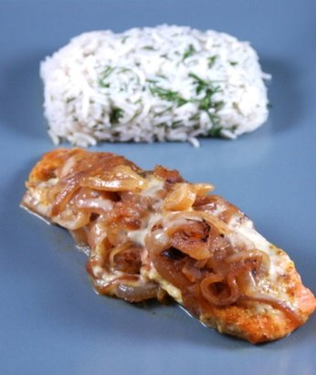

Saumon, mozzarella et aubergine au four
Ingredients
3×
- 1 aubergine
- huile d'olive
- 2 pavés de saumon
- 1 tomate
- 1 boule de mozzarella
- poivre
- basilic
- jus de citron

Préparation
Étape 1
Couper 1 aubergine en cubes et la rôtir 10min au four avec un filet d’huile d'olive.
Étape 2
Couper en morceaux 2 pavés de saumon, 1 tomate et 1 boule de mozzarella. Mélanger avec l’aubergine et un filet d’huile d’olive. Ajouter du poivre et du basilic.
Étape 3
Cuire 20 à 30min à 230ºC.
Étape 4
Arroser de jus de citron avant de servir.